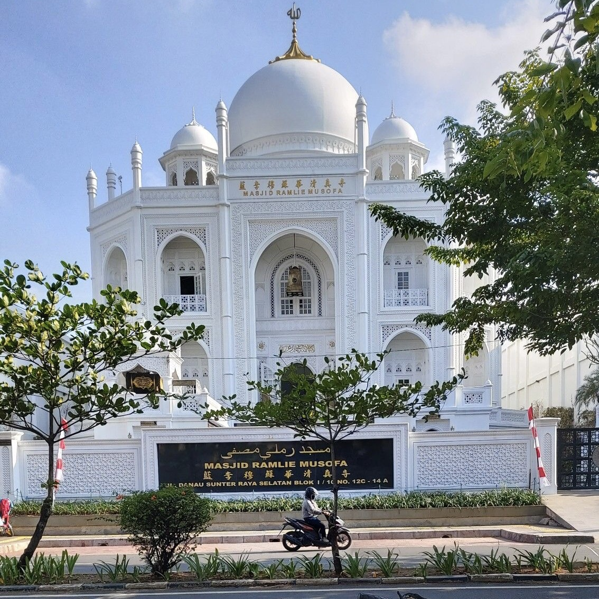
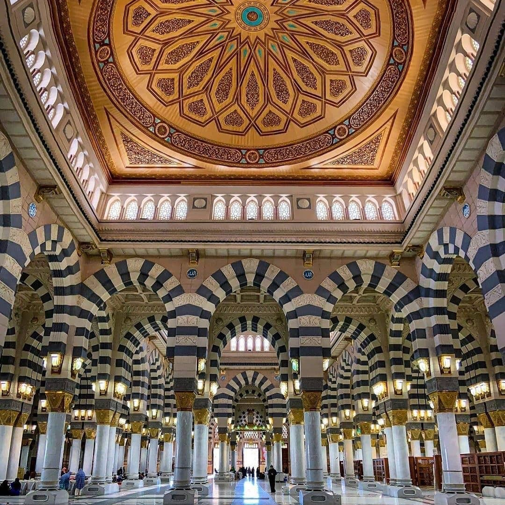

Form Upload Foto Mesjid

Tampak depan
Masjid Az-Zami memiliki desain arsitektur yang megah dengan dominasi warna putih. Tampak depannya menonjolkan gerbang utama yang tinggi dan lebar, dengan ornamen-ornamen islami yang indah. Kubah besar dan menara-menara tinggi menambahkan kesan monumental pada bangunan ini. Frontalnya mencerminkan keanggunan dan kebesaran sebagai salah satu masjid terbesar di dunia.

Tampak Belakang
Masjid Az-Zami tampak belakangnya mencerminkan desain yang simetris, dengan menara-menara kecil dan kubah yang teratur. Bagian belakangnya memberikan pandangan yang serasi dengan struktur keseluruhan masjid. Pemandangan dari sisi belakang ini menyajikan pandangan yang indah, dengan elemen arsitektur islami yang tetap kental. Meskipun fokus utama sering kali pada bagian depan masjid, sisi belakangnya juga dirancang dengan cermat untuk menciptakan keseluruhan yang harmonis.